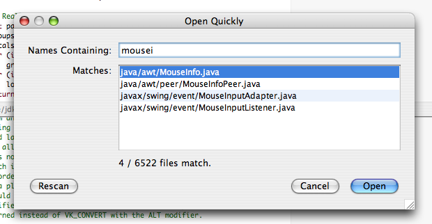
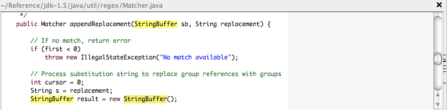
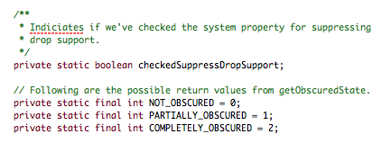
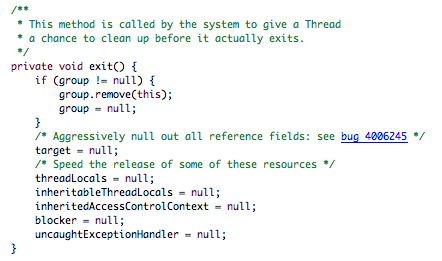
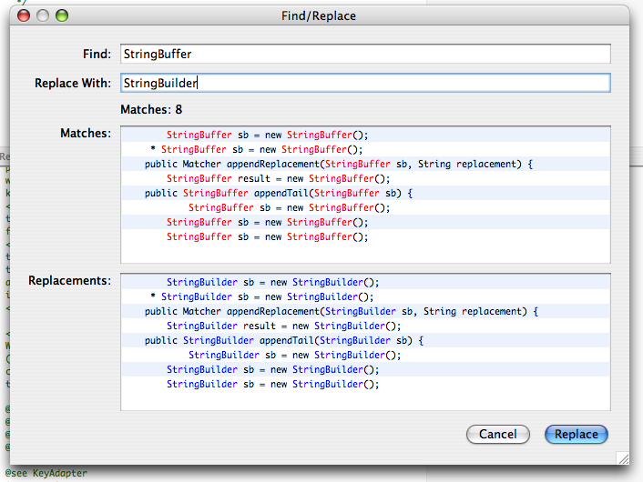

Ubiquitous Regular Expressions - Programmers know regular expressions, and yet their graphical tools don't use make much use of them. Evergreen does. Anywhere it's asking you to type something, it's probably expecting a regular expression: full Perl/Java regular expressions in find, in find/replace, in find in files (as you'd expect), but also in the open dialog. Evergreen uses "smart case" regular expressions, too, where an all-lowercase regular expression is assumed to be case-insensitive. You can use (?-i) and (?i) to explicitly turn case-sensitivity on and off.
Open Files Quicker - Evergreen indexes your project, so you don't have to remember where files are. Or what case your co-worker used ("Hyperlink" or "HyperLink"?). Just a substring or regular expression that matches what you want. Evergreen updates a list of the matching files as you type (like iTunes):

Find in Files - You can also search for files to open based on their content. Evergreen shows a tree of matches, representing the directory hierarchy. Files containing definitions are marked as such. Searching is done in parallel to take advantage of modern multi-core machines. Search results are automatically updated if anything changes:

Find - You have a fast computer, yet the 'find' function in other editors doesn't take full advantage of that fact. Evergreen, like less(1), highlights all the matches, whether you search with C-F or clicked on a match in the "Find in Files" dialog. Better still, Evergreen highlights all the matches as you type, so you know when you've typed enough (or too much, if you suddenly see there are no matches). Evergreen also lets you move backwards as easily as forwards through the matches: just use C-D to move backwards and C-G to move forwards, both conveniently placed around C-F, which defaults to searching for the currently-selected word. All of this comes together for fluid one-handed searching. Finally, Evergreen uses marks next to the scroll bar to give you contextual information about how many matches there are, and how they're clustered. You can click on a mark to skip a large clump of uninteresting matches, if you wish:

Spelling Checking for Source Code - Not only does Evergreen check your spelling as you type, it understands CamelCase words aren't single-word spelling mistakes but compounds of correctly spelled words. In this example, the identifiers have been checked too:

Exuberant Ctags Support - Evergreen uses Exuberant Ctags (if installed) to understand the structure of your file. The symbols in the current file are shown as a tree preserving their hierarchy. You can click on an item in the tree to go to the corresponding part of the file. Conversely, as you edit, the item in the tree corresponding to the current caret position is always highlighted.

The little icons tell you what kind of symbol you're dealing with. Classes, methods, and fields are circles, squares, and triangles respectively. An icon's color denotes the symbol's accessibility. Public, protected, private, and unknown accessibilities are shown as green, orange, red, and gray respectively. Icons for abstract classes or methods are hollow. Public static symbols are in bold. (Obviously, not all possibilities are available in all languages.)
Bug Database Links - References to bugs in your (or others') bug databases are automatically recognized and turned into hyperlinks:

Find/Replace - Find/replace functionality in other editors has a habit of being awkward in use. How much better to be able to see all the changes at once, with the results of the substitutions? Hovering over a match shows the captured groups in a tool tip, so you can check your capturing is as you intended.

(An open question is whether we wouldn't be even more comfortable with something more like the output from diff -u.)
Workspaces - You can work on multiple projects at once, with each "workspace" getting its own tab in the overall UI.
Workspaces are important. You probably want one for each project you're working on; if you're looking for "session" functionality, this is it.
If a workspace looks like a project (i.e. has a Makefile or is under revision control), the files will be indexed, so you probably want the root of your workspaces to be the directories with the top-level build instructions. There's no reason you can't create an empty Makefile as a hint to Evergreen if you want a workspace's root to be a directory that contains a collection of related projects, or it can sometimes be useful to create a simple Makefile to build all the contained projects. Evergreen doesn't look at Makefile content, so it doesn't care.
Workspaces are automatically saved when you quit and restored when you restart Evergreen.
Auto-Indent - Evergreen will automatically help you format your code in K&R, Linux kernel, or Sun's Java style. If you want to manually break long lines or use an indenting style too far removed from these, you're likely to face difficulties as it continues to try to "correct" your style. Ken Arnold's thoughts on coding style explain why this is usually a counter-productive degree of freedom. What you gain from accepting Evergreen's style (which shouldn't be a problem for most programmers) is that Evergreen will do most of the formatting for you. Even correcting stuff you paste in.
Watermarks - Each document has a watermark, used to show you if you're looking at a read-only file, or a file that has been updated on disk since it was last read in.
Building - Evergreen defers to make(1) or ant(1) to actually build your project, and will search upward from the directory containing the focused file looking for a makefile.
Patches - If you choose a potentially destructive action such as "Revert to Saved", you're shown a colored patch and given a chance to change your mind. (Not only that, it's a useful way to see how a machine-generated file is changing as you work on the generator. Just keep running the script and reverting to the latest version of the generated file.)
"Compare Selection and Clipboard..." - Shows you a patch comparing the currently-selected text and the text on the clipboard. This is useful when you're looking at two seemingly duplicate chunks of code and want to know what, if any, differences there are between the two.
Language awareness - Coloring and intelligent indentation of C++, Java, Perl, Ruby, and others.
Custom text component - We gave up on JTextPane because of its poor performance, and we gave up on JTextArea because of its poor functionality.
Unlike many other editors with their own text components, ours was explicitly designed to be useful elsewhere.
It's interface is broadly similar to JTextArea so it's easy to use in your own programs if you get used to any of the great functionality.